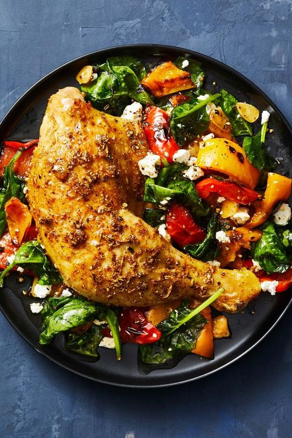
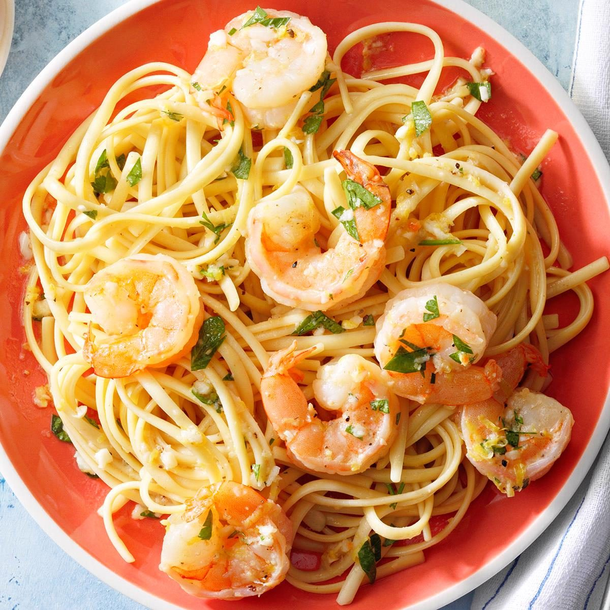

<!doctype html>
<html><head>
<title>demo for js14</title>
<style>body{background-image:url(wood2.jpg);}
aside{margin-left:50px; margin-top:30px;height:2000px;width:1250px;background-image:url(doll4.jpg);border-radius:40px;border:2px solid red;}
img{padding:50px;height:300px;width:300px;}
p{padding-right:100px;float:right;margin-left:5px;font-size:30px;width:700px;height:40px;color:black;margin-right:30px;color:red;text-align:justify;}
p:first-line{font-size:50px;}
form{margin-left:590px;}
#s1{margin-top:50px;}
#s2{margin-top:100px;}
#s3{margin-top:150px;}
#s4{margin-left:20px;margin-top:150px;}

</style></head>
<body>
<aside></img> 
<p><i>We publish only the Best Popular Fish Rice </li>Recipes For You!<br>
This was one of the first easy recipes I learnt to cook and can be mastered in just a few attempts!it's healthy,cheap and tasty and makes the ultimate student foog...</p>
<form><button><a href="read1.html">Read More</a></button></form><hr>

</img> 
<p id="s1"><i>Quick chikkan curry </li>Recipes For You!<br>
A super delicious Indian chikkan curry made with a blend of spices and in a jiffy!... Jugglig with the unexpected sudden dinner party?Or don't feel like cooking much but still craving a chikkan dish....</p>
<form><button><a href="read2.html">Read More</a></button></form><hr>

</img> 
<p id="s2"><i>Chilli Garlic Prawn Noodles </li>Recipes For You!<br>
Ready in 30 minutes,this stir-fried prawn,egg and noodles dish is perfect for a midweek meal....</p>
<form><button><a href="read3.html">Read More</a></button></form><hr>

</img> 
<p id="s3"><i> Veg Burger </li>Recipes For You!<br>
Delicious,lip-smacking and crunchy these words only remind you of this amazing American dish popularly Known as Burger.....
</p><form><button><a href="read4.html">Read More</a></button></form><hr>


</aside>
</body></html>